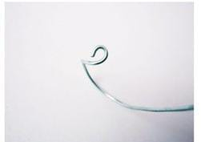
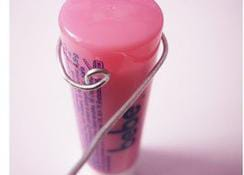
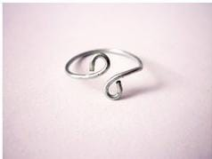

Anillo
Vamos a empezar
Paso 1 hacer un circulo chico en la parte principal del alambre

Paso 2 darle forma circular con un objeto de prefencia el dedo

Paso 3 darle vuelta y volver a cerrar como en el principio
